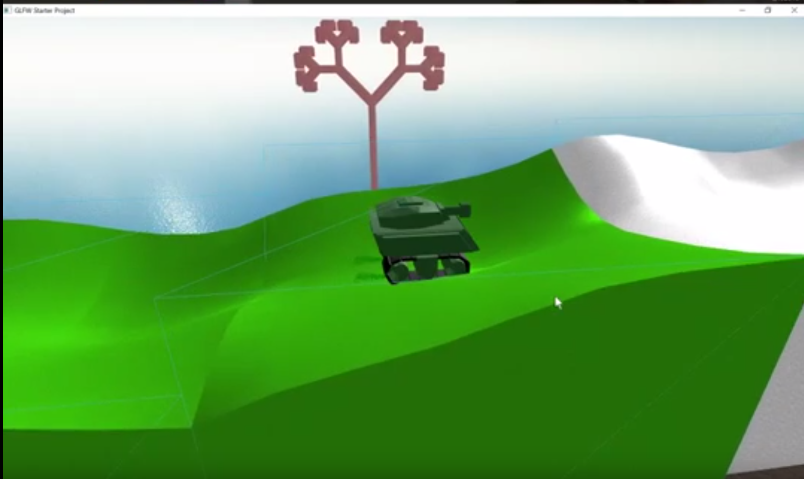

Tank Mode
This game features a tick rate to ensure that the game's animations and control inputs are not dependent on the FPS. In addition, there are procedurally generated terrain and structures using Bezier surfaces and L-systems, respectively. There are also particle effects, toggleable sound effects, and a camera that tracks the movement of the tank.
Pacman AI

This simulation of Pacman has an AI controlling it. Initially, the Pacman will make moves that aren't worth as much. However, as it continually fails, it will continue to learn more and more, eventually reaching the point where it can make smarter and smarter decisions based on the possible number of points.